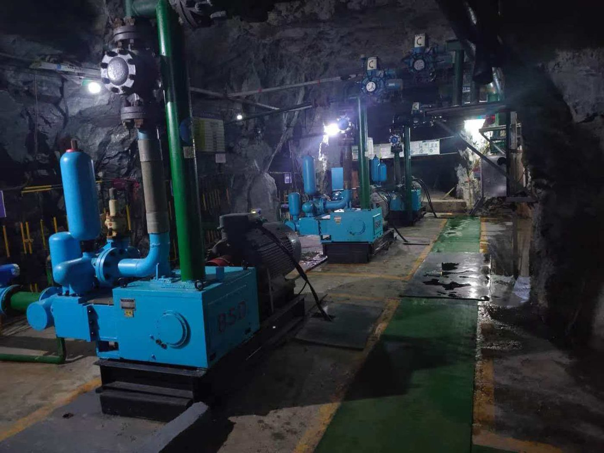
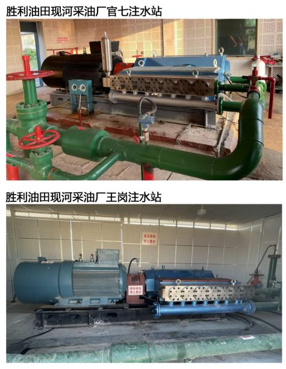
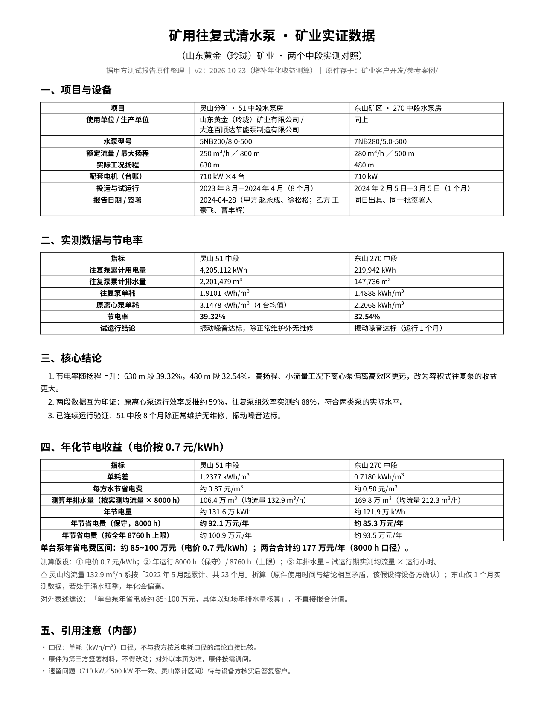
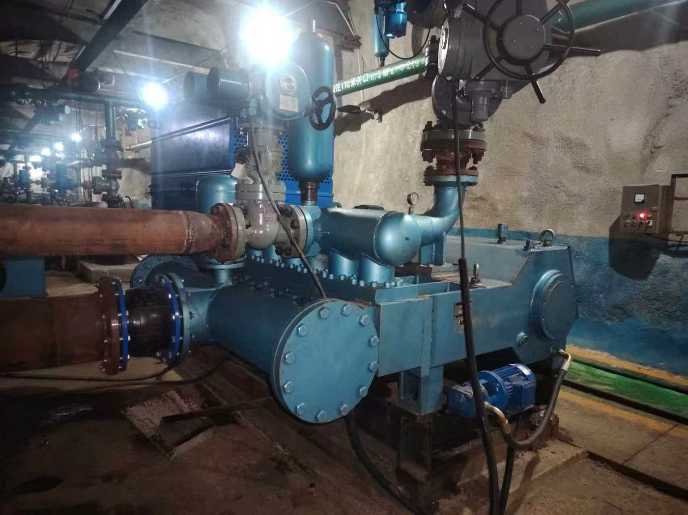
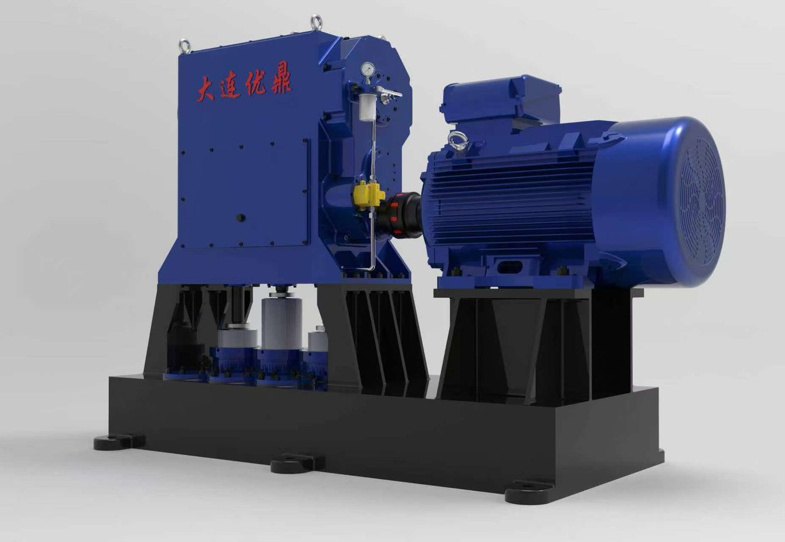
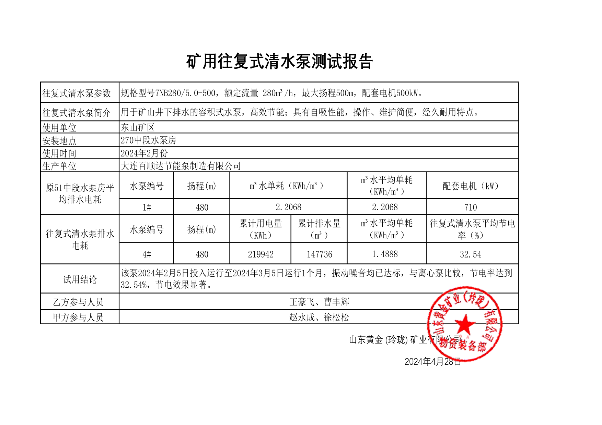
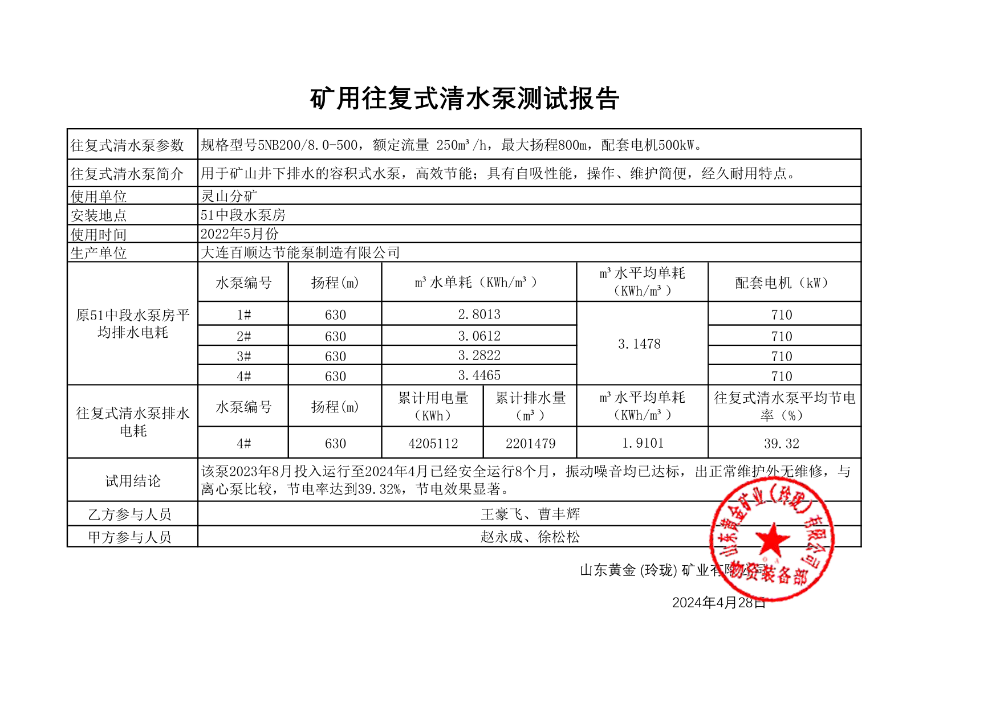

三个泵房，−50 / −250 / −500 m
6 台往复机组替换 24 台多级离心泵：台数更少、比能耗更低，检修在现场完成而不必返厂。
业绩与检测报告
下面每一个数字都来自现场测试：流量、压力、输入功率与比能耗均在机组上实测，不是抄自样本曲线。
项目

6 台往复机组替换 24 台多级离心泵：台数更少、比能耗更低，检修在现场完成而不必返厂。

七柱塞注水泵自 2023 年连续运行。实测比功率低至 0.3 kWh/m³·MPa，被替换的离心机组为 0.5–0.8。


CDQ 余热锅炉给水泵替换：节电 26.7%，按年运行 8,000 小时计年节电约 128.5 万 kWh，回收期 3.2 年。

固料重量浓度 30% 以上的磨蚀性浆体，离心浆料泵返修后几个月内效率就掉下来。

多级离心给水泵改为三柱塞与五柱塞机组，同等蒸发量下节电 19–21%。
技术资料
在运装置的扫描报告。每份含泵型号、实测流量与压力、电输入以及由此得出的比能耗。


具体订单的合格证、材质报告与出厂试验记录随报价文件一并提供。机组按中国往复泵标准制造；目标市场所需的认证按项单独报价。
告诉我们应用场合，我们把最接近的同类装置连同实测数据一起发给你。